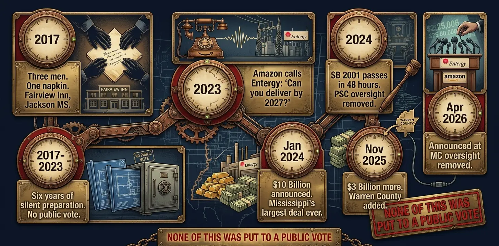
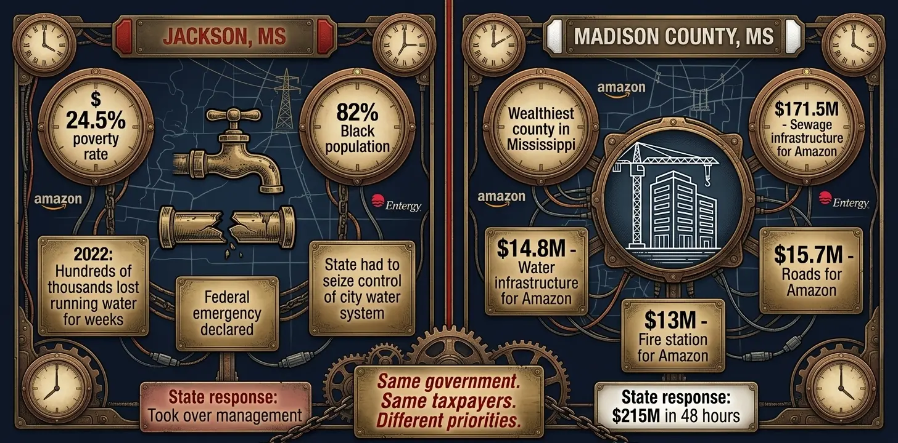
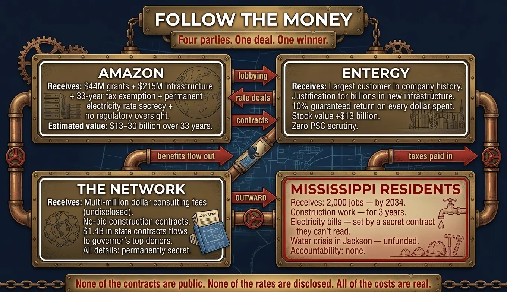
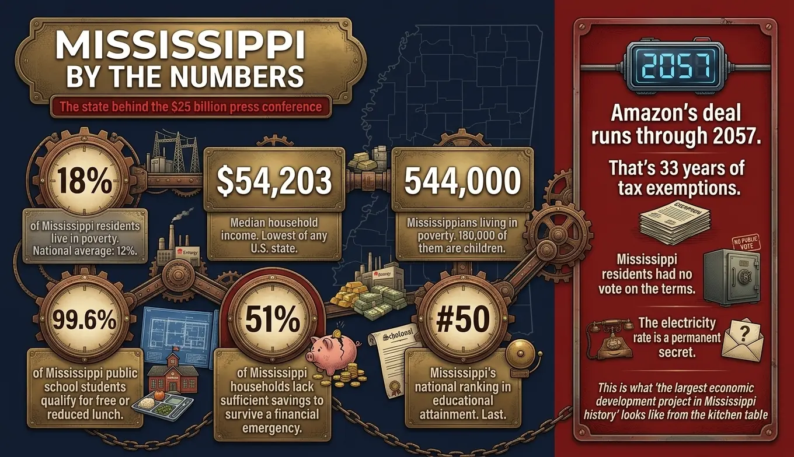

In January 2024, Governor Tate Reeves stood at a podium and announced what he called the largest economic development project in Mississippi history: Amazon Web Services would invest $10 billion to build data centers in Madison County. The crowd applauded. The press releases went out. The headlines ran across every major outlet in the state. Two years later, that number has ballooned to $25 billion, spread across three counties, with a fourth announcement seemingly always weeks away. By every official measure, this is Mississippi's greatest triumph. Reporters are told to celebrate. Politicians from both parties are lining up to take credit. And the people of Mississippi — the ones who earn a median household income of $54,000 a year in the poorest state in America — are being told this deal was made for them.
It was not made for them. This investigation will show you exactly who it was made for, how the machinery behind it operates, and why the answer has nothing to do with whether a Democrat or Republican holds the governor's office. The parties are different colors on the same machine. The machine, as always, is what matters.
The Napkin. The Oak Tree. The Plan That Took Seven Years.
The official story of how Amazon came to Mississippi begins with a phone call in 2023. Entergy Mississippi received an inquiry from AWS: could you deliver two large data centers by spring 2027? Mississippi said yes, Amazon announced the deal, and everybody celebrated. That is the version they want you to know.
The real story starts in 2017 — seven years before the press conference — at the Fairview Inn in Jackson. Three men sat down: Gray Swoope, the former executive director of the Mississippi Development Authority under Governor Haley Barbour, now running a private consulting firm called VisionFirst Advisors; Haley Fisackerly, the CEO of Entergy Mississippi; and an executive from Amazon Web Services. They sat under an oak tree, Fisackerly later recalled, and started writing ideas on a napkin. The question on the napkin was simple: how do we get Mississippi ready for data centers?
What followed was not luck. It was a six-year construction project — not of buildings, but of conditions. Entergy quietly began upgrading its power infrastructure. The state began developing industrial sites. Workforce training programs were established. The regulatory environment was shaped, piece by piece, to make Mississippi uniquely attractive to the kind of investment that was coming. By the time Amazon called in 2023, Mississippi was not discovering an opportunity. It was completing a plan.
That plan was designed in private, by private actors, using information and relationships built inside government, for the benefit of a set of interests that had everything to gain and nothing to lose. Not a single Mississippi voter was in the room at the Fairview Inn. Not a single elected official had approved what was being designed. The machine works best when no one is watching.

Seven years. Three announcements. One plan that was never put to a public vote.
The Law They Wrote in Two Days
On a Tuesday in 2024, the Mississippi legislature convened a special session. By Thursday, they had passed Senate Bill 2001 — a sweeping rewrite of the state's economic development laws that runs to dozens of pages and touches everything from tax exemptions to regulatory oversight to eminent domain. The bill was drafted largely with Amazon Web Services in mind. Legislators had 48 hours to review it. Most did not fully understand what they were voting for. The public was given no meaningful opportunity to weigh in.
Section 22 of SB 2001 is the part that nobody talks about at press conferences. Those nine pages do something that no other state in America has done: they remove the Mississippi Public Service Commission — the regulatory body specifically created to protect consumers from the power company's monopoly — from all oversight of any rate agreements between Entergy Mississippi and its largest data center customers. Amazon's electricity rate is now, permanently and legally, a trade secret. No public hearing. No PSC review. No accountability.
What SB 2001 Actually Does
- Removes PSC oversight for all Entergy rate agreements with data centers — the first such exemption in U.S. history
- Eliminates competitive bidding for construction contracts related to the Amazon campuses — meaning connected firms can be selected without open competition
- Makes Amazon's electricity rate a permanent trade secret — not even state regulators can review it
- Allows Entergy to charge infrastructure costs to ratepayers before data centers are even operational
- Grants 33-year rolling tax exemptions — with conditions so easy to meet that Amazon's $118 billion annual capital budget makes them meaningless
- Provides no employment guarantees — the proposed 25% Mississippi residency requirement for jobs was voted down
The significance of removing PSC oversight cannot be overstated. Entergy Mississippi is a government-sanctioned monopoly. Every home and business in its territory is required by law to buy electricity from Entergy — they have no alternative. The entire justification for allowing a monopoly to exist is that the PSC stands between the company and the captive consumer, ensuring rates are fair. SB 2001 removed that protection — permanently, secretly, for the most consequential deal in the company's history. Entergy's stock rose $13 billion in the months following the Amazon announcements. The people who wrote SB 2001 gave that gift to shareholders. They gave Mississippi residents a promise that rates would go down. The promise is unverifiable by design.
The Money Mississippi Put In — And What It Actually Got
When officials tout this deal, they present a clean ratio: Mississippi invested $259 million to attract $25 billion. The math, they say, is undeniable. What they do not tell you is what that $259 million actually is, where it actually went, and what the real cost — the one nobody has calculated — actually amounts to.
The $259 million is not a single investment. It is a composite. Forty-four million dollars came directly from state taxpayers — $35 million for workforce training and $5 million for site development. Another $215 million was structured as a loan from the state to Madison County, which then used that money to build roads, water lines, sewage infrastructure, and a fire station for Amazon's campus. That $215 million came from the Mississippi Major Economic Impact Authority — meaning it came from the public treasury, from money that could have funded schools, hospitals, or the water system in Jackson that failed in 2022.
Consider that contrast for a moment. Jackson — the capital city of Mississippi, where 24.5% of residents live in poverty and 82% of the population is Black — could not maintain its own water infrastructure. In 2022, hundreds of thousands of people went weeks without clean running water. The state had to take over control of the city's water system because local government could not manage it. And simultaneously, the same state government sent $171.5 million in sewage infrastructure and $14.8 million in water infrastructure to Madison County — the wealthiest county in Mississippi — to support a $2 trillion corporation's construction project.

Jackson couldn't fix its water. Madison County got Amazon's sewage system. This is what Mississippi's economic priorities look like on paper.
The $215 million loan, officials are quick to note, will be repaid. Madison County receives approximately $30 million per year in fees from Amazon — not taxes, but fees, because Amazon has been exempted from the normal property tax system and pays a negotiated fee instead, the terms of which are secret. At $30 million per year, the state gets its principal back in roughly seven years. No one has publicly disclosed the interest rate on the loan. No one has calculated the opportunity cost of that money sitting in Amazon's infrastructure instead of Mississippi's own communities for that period. And no one has asked what happens if Amazon's timeline slips, its investment falls short of the rolling threshold required to maintain its exemptions, or it simply decides — as corporations occasionally do — that the deal no longer serves its interests.
| What Mississippi Gave Amazon | Amount / Duration | Verifiable? |
|---|---|---|
| Direct taxpayer grants | $44 million (one-time) | Yes |
| Infrastructure loan (roads, water, sewage, fire station) | $215 million | Yes — repayment terms secret |
| Corporate income tax exemption | 100% for 10 years | Yes |
| Rolling tax exemptions | Up to 33 years (through 2057) | Yes — value uncalculated |
| Removal of PSC oversight (rate secrecy) | Permanent | Yes — cost to ratepayers unknown |
| No-bid construction contracts | Ongoing | No public accounting exists |
| Estimated total value to Amazon (13–30 years) | $13–30 billion | Estimated — not officially disclosed |
What Amazon Gets. What Entergy Gets. What the "Network" Gets.
This deal has four primary beneficiaries. Mississippi residents, as we will examine, are not among them.
Amazon gets the obvious: a $25 billion asset base built with the help of public money, in an environment with no regulatory oversight of its electricity costs, with a 33-year tax holiday attached. AWS had a $118 billion capital expenditure budget in 2025. Mississippi's $25 billion commitment represents roughly 21% of that annual budget — but Amazon received it in an environment with no meaningful public scrutiny, no binding employment guarantees, and a rate structure for its largest operational cost that will never be seen by any regulator or citizen. This is not economic development. This is the most favorable corporate subsidy arrangement in American history.
Entergy gets something more structural. Before Amazon, Entergy Mississippi was a utility serving a low-income customer base with slow growth, aging infrastructure, and declining revenue. It needed massive capital investment but lacked the customer base to justify it. Amazon solved every one of those problems simultaneously. Amazon's data centers consume between 800 megawatts and 1.6 gigawatts of power — roughly equivalent to half to all of Entergy Mississippi's entire existing residential and commercial customer base combined. Entergy now has a justification to build new power plants, upgrade transmission lines, and modernize its grid — and under the regulatory model Entergy favors, every dollar of infrastructure spending generates a guaranteed return of approximately 10% for shareholders. Amazon didn't just save Entergy. It gave Entergy a license to grow its rate base — the asset base on which it earns regulated profits — by billions of dollars, with ratepayers as the ultimate backstop if anything goes wrong.
The network — the web of former officials, consultants, and connected firms that designed and executed this deal — gets something harder to quantify but no less real. Gray Swoope, who was in the Fairview Inn room in 2017, runs VisionFirst Advisors, a site selection and consulting firm that works with Fortune 500 companies. Site selection fees for projects of this scale — $10 to $25 billion — run between 0.1% and 0.5% of project value. The mathematical range is $10 million to $50 million, though the precise figure is, of course, private. Swoope's firm subsequently announced a strategic partnership with The Southern Group, the largest lobbying firm in Florida. VisionFirst now has clients in all 50 states and claims to have advised on projects totaling over $100 billion in announced investment. The Mississippi deal, regardless of its fee structure, made Gray Swoope one of the most credentialed economic development consultants in the American South.
Meanwhile, a Mississippi Today investigation documented that Governor Reeves' top 88 campaign donors — those who gave $50,000 or more — received a combined $1.4 billion in state contracts from agencies he oversees. Mississippi has no pay-to-play prohibitions. No reporting requirements for companies doing business with the state while donating to state officials. With construction contracts for Amazon's campus exempt from competitive bidding under SB 2001, the overlap between the governor's donor network and the project's beneficiaries is unverifiable — which is, of course, the point.

Follow the money. Not all four parties in this deal were at the table when the terms were written.
The Jobs That Were Promised — And the Math That Doesn't Add Up
The official headline is 2,000 jobs. Governors say it at every press conference. Amazon includes it in every press release. The number is technically accurate in the same way that a weather forecast for "partly cloudy" is technically accurate — it describes something real while concealing everything that matters.
The 2,000 jobs will not materialize until 2034 at the earliest — ten years after the first announcement. In the meantime, the state has already spent $259 million, committed to 33 years of tax exemptions, permanently removed regulatory oversight from its largest utility deal, and built infrastructure that serves a $2 trillion corporation before it serves the residents of Jackson. The deal's terms require Amazon to add only 50 jobs per year and invest $500 million annually to maintain its rolling tax exemptions. For a company with a $118 billion annual capital budget, spending $500 million in Mississippi — 0.4% of its global expenditure — is the easiest compliance threshold in corporate America.
When state Rep. Robert Johnson, the Democratic minority leader, proposed an amendment requiring that at least 25% of Amazon's jobs be filled by Mississippi residents, the amendment was voted down. It was not controversial among those who voted against it. The idea that the state's largest economic development project in history should include any guarantee that the jobs go to Mississippians was considered unreasonable.
What kind of jobs are these, anyway? Data centers require network engineers, cybersecurity specialists, cloud infrastructure architects, and systems administrators — workers with bachelor's degrees in computer science or engineering, often master's degrees, frequently with years of specialized experience. Mississippi ranks last in the nation in educational attainment. Nearly all of the state's public school students qualify for free or reduced-price lunch. The workforce training programs attached to this deal offer fiber-optic splicing courses and two-year community college programs. These are not pathways to the $80,000-per-year jobs being promised. They are pathways to the maintenance and operational roles that pay $40,000 — while the engineering and management positions are filled by people recruited from outside the state, as they are in every comparable facility in America.
This is not speculation. It is the documented pattern in Ohio, Indiana, Virginia, and every other state that has made large data center deals over the past decade. The construction jobs — real, local, well-paying — last two to three years. The permanent jobs are few, and most of the senior ones go to specialists who live elsewhere and commute or relocate for the position. The economic multiplier that a factory creates — local suppliers, local vendors, local spending patterns — does not exist for a data center. Its revenue flows digitally to Seattle. Its supply chain is national and global. Its operational footprint in the local economy is a fraction of what its capital investment suggests.
This Is Not a Mississippi Problem. It Is an American Problem.
Before assigning blame to any governor or any party, it is essential to understand the structural trap that produces deals like this one. Mississippi is not uniquely corrupt. Its officials are not uniquely captured by corporate interests. The mechanism that produced SB 2001 is operating in every state in the country, with different names, different players, and identical outcomes.
In 2026 alone, more than 300 state data center bills were filed across 30 states. Virginia, which has the most data centers in the United States, is now examining whether to end $1.6 billion in annual tax exemptions for the industry — after giving those exemptions for years. Michigan passed data center tax incentives when Democrats controlled the governor's office and both chambers of the legislature, then watched as public opposition exploded and a bipartisan repeal effort emerged. A Democratic Socialist and a Republican Freedom Caucus member introduced the repeal bill together. In Georgia, Republicans advanced a bill to end data center incentives. In South Dakota, Republicans proposed a Data Center Bill of Rights that would eliminate state tax exemptions entirely.
The insight this bipartisan backlash reveals is the one that Mississippi's current political establishment is working very hard to prevent you from having: the problem is not the party in power. The problem is the structural incentive that every state government faces. Any governor who cuts a data center deal gets a press conference, a headline, and a billion-dollar number to campaign on. Any governor who refuses the deal watches the investment go to the neighboring state, which gets the press conference instead. This is a race to the bottom with no finish line and no winner — only the companies collecting the exemptions while states compete to give more.
The federal government has the theoretical authority to address this — to set minimum standards for state economic development agreements, to condition federal funding on transparency requirements, to use antitrust authority against arrangements that distort energy markets. It has not used those tools. Under Democratic administrations and Republican ones, the posture toward large technology company investment has been uniformly encouraging. The Biden administration celebrated data center expansion. The Trump administration has done the same. The federal agencies that could scrutinize these arrangements — the FTC, the DOJ, FERC — have institutional incentives, political constraints, and in some cases direct conflicts of interest that make aggressive action unlikely.
And Amazon itself, it should be noted, is not merely a private company making a business decision. AWS is one of the largest contractors to the U.S. federal government. The CIA, NSA, and dozens of other agencies run on Amazon infrastructure. A corporation whose revenue depends in part on federal government contracts has leverage that ordinary companies do not — leverage that makes aggressive regulatory scrutiny from Washington politically complicated in ways that have nothing to do with the merits of any particular state deal.
The Question Nobody in Power Is Asking
This deal was structured so that the people most affected by it have the least access to its terms. The electricity rate Amazon pays Entergy is a permanent secret. The construction contracts awarded without competitive bidding are not required to be publicly disclosed. The full text of Mississippi's agreement with Amazon has not been released. The economic projections used to justify the deal were produced by a state economist working for the administration that negotiated it, using assumptions that have never been independently verified.
What we do know is this: Jackson, Mississippi still does not have reliable water infrastructure. The $215 million that went to build Amazon's sewage system in Madison County could have funded meaningful progress on that crisis. The 33-year tax exemption that Amazon received will deprive Mississippi of corporate tax revenue through 2057 — a generation of foregone public investment in the communities that need it most. The removal of PSC oversight means that whatever happens to electricity rates in this state over the next three decades, Mississippi residents will have no institutional mechanism to challenge agreements that Entergy makes in their territory with their monopoly power.
And the 18% of Mississippi residents living in poverty — approximately 544,000 people, a third of them children — will watch the largest economic deal in state history pass through their communities, generating construction jobs that last three years, permanent positions that require credentials most of them do not have, and electricity bills set by a contract they are not allowed to read.

Mississippi is the poorest state in America. The largest deal in its history was negotiated in secret, for the benefit of people who were already wealthy.
The Only Exit From the Machine — And What It Has Always Cost
Do not look for the exit in an election. The evidence accumulated in this investigation does not support that hope. The machine that designed this deal in 2017 was operating simultaneously across Republican and Democratic administrations at the state and federal level. It kept operating through every election cycle between 2017 and 2026. It will keep operating through every election cycle that follows. The governors change. The machine does not.
This is not cynicism. It is pattern recognition. And the pattern has a history.
In 1897, William McKinley came to the presidency as something the machine had rarely encountered: a man who had already decided what he was for before any deal was offered. He had defended striking miners for free in 1876, when the mine owner was his own future campaign manager. He had refused their payment when no one was watching. He had fed starving workers from his own pocket before anyone called it leadership. His entire record — before he held national office — was a twenty-year demonstration of where his loyalty actually sat. Not with the bankers. Not with the network. With the wages of working people.
McKinley built a tariff system that funded the federal government through trade rather than through private banking debt. Between 1897 and 1901, manufacturing output rose 50 percent. Real wages climbed every year. The government ran surpluses. Seven hundred and fifty thousand working people made the journey to his front porch in Canton, Ohio — not to a rally, not to a convention, but to his house — because they felt his system at the kitchen table before any economist published a paper about it.
On September 5, 1901, McKinley gave the most important speech of his presidency. He announced that America would negotiate trade on its own terms — bilateral agreements directed by an elected government, not by private banking networks. He was describing a future in which the financial architecture that J.P. Morgan and his London-connected network had spent decades constructing would lose its grip on the American government.
The next day, September 6, 1901, he was shot. He died eight days later.
Theodore Roosevelt took the oath of office. Morgan walked into the White House and told the new president: "If we have done anything wrong, send your man to my man and they can fix it up." Roosevelt used the Sherman Antitrust Act — which had existed since 1890 and never been enforced — to pursue Morgan's competitors. He never touched U.S. Steel. He never touched the banking architecture that would become the Federal Reserve. Morgan then funded Roosevelt's 1904 campaign. The Pujo Committee found in 1913 that after seven years of celebrated trust-busting, Morgan and his associates controlled a larger concentration of American financial power than before Roosevelt took office. The reform was theater. The machine was theater's patron.
In 1913 — twelve years after one bullet in Buffalo — three laws passed in a single year. The Federal Reserve Act handed control of the American money supply to a private banking network modeled on the Bank of England. The income tax replaced tariff revenue, making the system McKinley had built to fund government through trade dispensable. The Underwood Tariff dismantled the rates that had protected American wages. The trajectory McKinley had set was reversed. Permanently. On purpose. By the men who had the most to lose if it continued.
John F. Kennedy signed Executive Order 11110 in June 1963, directing the Treasury to issue currency backed by silver — outside the Federal Reserve system. The direction it pointed was unmistakable. Five months later, in Dallas, he was shot. The silver certificates were quietly withdrawn. The direction was reversed. The machine does not need to issue memos. It needs only enough people in enough positions to recognize a threat and respond.
Martin Luther King was not shot because he had a dream. He was shot after he began connecting the Civil Rights movement to economic power — after he started building the Poor People's Campaign, after he began arguing that the poverty of Black Americans and the poverty of white Appalachian miners and the poverty of farmworkers were products of the same system. When he made that connection publicly and began assembling the broadest coalition the machine had ever faced, the bullet found him in Memphis on April 4, 1968.
The pattern does not require a conspiracy theory. It requires only that you look at who benefits from the removal of each man, and compare it to who benefited from the system each man was threatening. McKinley threatened the financial architecture built around private banking control of government revenue. Kennedy threatened one pillar of that architecture directly. King threatened to build the popular coalition that could have dismantled it from below. None of them were asking for a better deal within the existing structure. All of them were naming the structure itself and building something around the naming that the machine could not absorb.
That is the specific threat the machine cannot survive. Not better legislation. Not a more honest governor. Not a reform candidate who promises to change things from inside a system designed to neutralize exactly that promise. What it cannot absorb is a public that understands — clearly, without softening, without the comfort of partisan framing — what the machine actually is and what it actually does to them. And individuals with the character to say so at the cost of everything the machine controls.
SB 2001 is not a Mississippi story. It is a Mississippi example of a national architecture that has been built piece by piece for more than a century. The Federal Reserve designed at Jekyll Island in 1910. The income tax enacted in 1913. The removal of PSC oversight written into nine pages of legislation passed in 48 hours in 2024. The scale changes. The method is identical. The beneficiaries are the same class of people operating the same machine with different names on the door.
Jackson still has no reliable water. The poorest state in America just handed a $2 trillion corporation a 33-year tax holiday and permanent electricity rate secrecy — funded by the taxes of people who earn $54,000 a year, who cannot hire a lobbyist, who are not allowed by law to read the contract that governs their utility bills.
It was not done for them. It was never going to be done for them. That is not the machine's purpose. That has never been the machine's purpose.
The only force in American history that has ever successfully moved that machine — not reformed it, not negotiated with it, but actually moved it — has been individuals willing to name it without softening the language, combined with a public pushed far enough to hear the name and recognize it. McKinley was building that constituency in Canton. King was building it in Memphis. The machine recognized both threats before either man could complete what he started.
The question this investigation cannot answer — the one that belongs to the people of Mississippi, and to every other state watching the same deal happen with different names on the press release — is whether there are still individuals willing to carry that cost. People who have already decided what they are for. People who cannot be redirected because they do not want what the machine is selling. People who understand that the last tool the machine reaches for, when the law and the money and the silence and the character assassination have all failed, is the most permanent one.
They may be the last option the people of Mississippi have.
They may be the last option any of us have.
What We Know — And What Remains Secret
- Known: $44M in direct state grants to Amazon's project. $215M state loan to Madison County for infrastructure.
- Known: SB 2001 removes PSC oversight of Amazon's electricity rate — permanently and uniquely in U.S. history.
- Known: Amazon's tax exemptions run through 2057. The rolling condition requires $500M investment and 50 jobs annually — trivial for a company with $118B in annual capital expenditure.
- Known: A proposal requiring 25% Mississippi residency for Amazon jobs was voted down.
- Known: Entergy's stock rose approximately $13 billion following the Amazon announcements.
- Known: Reeves' top 88 donors received $1.4B in state contracts from agencies he oversees (Mississippi Today investigation).
- Secret: Amazon's electricity rate with Entergy — permanent trade secret under SB 2001.
- Secret: Terms of the $215M loan — interest rate undisclosed.
- Secret: Construction contract recipients — no competitive bidding required, no public disclosure mandated.
- Secret: Full text of the state-Amazon agreement.
- Uncalculated: The real 33-year cost of this deal to Mississippi residents. No independent analysis has been published.
This investigation draws on Mississippi Today reporting, Site Selection Magazine, the Mississippi Independent, The Dispatch, congressional testimony, SB 2001 bill text, Amazon public statements, Entergy financial disclosures, and U.S. Census Bureau data. Mississippi Lead requested comment from the offices of Governor Reeves, Entergy Mississippi, and Amazon Web Services. This article will be updated to include any responses received.